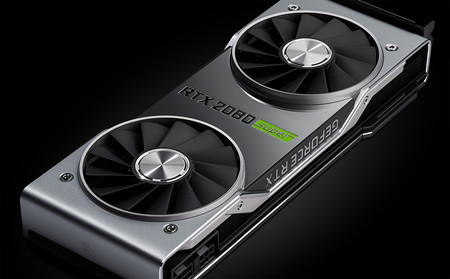

Lista de Novedades
PC Premontados


Todo lo que necesitas saber sobre los PC Gaming
A pesar de que poco a poco se va estabilizando el mercado de componentes gaming de escritorio, los precios siguen muy por encima de lo que deberían. Por no hablar de los constantes problemas de stock que nos están tocando vivir, y que hacen que sea complicado adquirir las piezas que nosotros quisiéramos.
Menos mal que los portátiles gaming están resultando una sorprendente alternativa tanto para jugar como para trabajar, gracias que encontramos multitud de modelos con hardware de última generación con los que ir capeando el temporal. Y además, en muchas ocasiones encontramos ofertas de lo más interesantes
Aun así, si queremos un PC gaming y no valoramos pasarnos a modelos portátiles, sino que necesitamos que se trate de equipos sobremesa sí o sí, tenemos algunas formas de conseguirlos. Una de ellas es configurar y comprar un PC completo en tiendas especializadas, en cuyo caso es más sencillo acceder al poco stock de gráficas que hay actualmente. Y la otra es adquirir un PC ya montado.
De modo que si nos decantamos por esta segunda opción, a continuación veremos cuáles son los aspectos donde debemos fijarnos con más atención y repasaremos algunos de los modelos más interesantes que encontramos en el mercado en estos momentos.
Todo gira en torno a la tarjeta gráfica
Lo vayamos a usar exclusivamente para jugar o no, el PC que compremos tiene que incluir una gráfica lo suficientemente solvente como para mover los juegos. Así que, independientemente de si somos jugadores habituales u ocasionales, debemos prestar atención a cuál es la tarjeta que cada modelo incorpora.

Generalmente, cualquiera de la presente generación y de la pasada, tanto de AMD como de NVIDIA, nos servirá para jugar. Pero no todos los juegos son iguales, y las exigencias de cada usuario, tampoco. Por lo que dependiendo de a qué queramos aspirar y a los títulos que queramos jugar, tendremos que decantarnos por una gráfica u otra.
En resumidas cuentas, podríamos decir que con cualquier RTX de la serie 2000 de NVIDIA iremos bien para jugar a 1080p con una tasa de fotogramas por segundo que oscile entre 60 y 144 (los estándares más extendidos hoy en día). Si queremos dar el salto al 1440p, sería interesante decantarnos por alguna RTX 3000 de gama media, como la 3060 Ti o 3070. Y si definitivamente vamos a por el 4K, las RTX 3080, 3080 Ti y 3090 son las opciones ideales.
El procesador también es importante
Sin resultar tan importante como la tarjeta gráfica en lo que a jugar se refiere, pero igualmente fundamental, tenemos el procesador. Generalmente suele ser la GPU el factor limitante, aunque en ciertos juegos es la CPU la que recibe una mayor carga de trabajo. Sobre todo en resoluciones más bajas. Es por ello que un buen equipo gaming que se precie en pleno 2021 debe tener un procesador a la altura.
En este sentido, los fabricantes de equipos montados introducen procesadores perfectamente solventes, a lo que hay que sumar que es un componente con menores problemas de sobreprecios y stock que las GPU. Aquí lo ideal es contar con un chip con un mínimo de 6 núcleos y 12 hilos, para que no nos quedemos cortos de cara al futuro. Aunque si podemos dar el salto a uno con 8/16, mejor que mejor.
El único aspecto que más difiere entre unos equipos y otros, y donde juega un papel fundamental la preferencia de cada usuario, es la elección de la marca; AMD e Intel son quienes monopolizan el mercado de escritorio, y decantarse por una u otra pasa a menudo por gustos. En líneas generales, desde un Intel Core i5-11400 o más, iremos más que sobrados para jugar; en lo que respecta a AMD, el corte estaría en un Ryzen 5 3600. Y si la CPU elegida es de la última generación, mejor que mejor.
No nos olvidemos de la RAM y el almacenamiento
Dos aspectos que también pueden marcar la diferencia entre un equipo solvente y uno frustrante son las memorias RAM y el almacenamiento interno. La primera juega un papel fundamental en la cantidad de fotogramas por segundo que podemos alcanzar en cada juego. Y el segundo, por su parte, puede limitarnos en cuanto a la cantidad de juegos (y aplicaciones) que podamos instalar, así como la velocidad de los tiempos de carga.
El estándar actual de la RAM está bastante claro: 16 GB es la cantidad óptima en relación calidad precio. Menos, puede limitarnos en algunos juegos. Y más siempre es bienvenido. Es por ello que en prácticamente cualquier equipo gaming premontado encontramos esos 16 GB.

En cuanto al almacenamiento, la capacidad depende en gran medida de las necesidades de cada usuario. Porque ya sabemos que no todos los juegos ocupan lo mismo; existen algunos muy livianos y, otros, tremendamente demandantes de espacio como Call of Duty: Warzone con sus sucesivas actualizaciones. Entonces, para el sistema operativo, las aplicaciones básicas y algún que otro, con en torno a los 500 GB no tendremos mayores problemas. Aunque si queremos instalar cuantas más cosas, mejor, lo ideal sería dar el salto a 1 TB o más.
Lo que sí es un must have hoy en día es que el tipo de almacenamiento pase por unidades de estado sólido. Incluso más allá: discos duros M.2 NVMe, de esos que se conectan directamente a las placas base compatibles y que ofrecen las mayores velocidades de lectura y escritura del mercado. La diferencia entre usar alguno de estos y un HDD clásico la encontramos en los tiempos de carga en programas y juegos, que se recortan hasta límites sorprendentes.
Otros aspectos a tener en cuenta
Finalmente, y a pesar de que lo visto arriba es lo principal en un equipo gaming (y en cualquier otro tipo, en realidad), existen otros tantos aspectos a tener en cuenta. Aquí entran en juego componentes como la placa base; dependiendo de la marca y el modelo, podemos acceder a un mayor número de puertos de cara a ampliaciones futuras, así como contar con mejores opciones de refrigeración de los VRM, entre otros.
También resultan vitales todos aquellos detalles que tengan que ver con la refrigeración. Tanto la caja del ordenador como el sistema de disipación de la CPU han de ser lo suficientemente solventes como para mantener las temperaturas a raya en los momentos en los que el equipo está trabajando a pleno rendimiento y, por tanto, generando una gran cantidad de calor.
Por último, componentes como la fuente de alimentación (prestando atención a su potencia, calidad y certificación) o añadidos como iluminación RGB, pueden resultar puntos diferenciales para los usuarios, haciendo que terminen de decantarse (o no) por ellos. Y ahora sí, vamos a ver algunos de los mejores ordenadores gaming ya montados que encontramos en el mercado en estos momentos.
Ejemplos de PC Premontados de Alta calidad
- PcCom Gold Intel Core i5
- PcCom Gold Intel Core i7
- Nitro PC -Élite Silver
- Nitro PC -Élite GOLD
- PC Specialist - PULSAR PRO